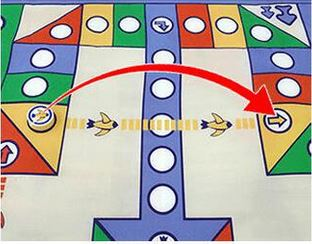

History
Aeroplane Chess is also called Flying Chess or
Fei Xing Qi in Chinese. The board game is developed in the 20
century. The chess pieces require going around the board clockwise to
reach the goal. Maybe it is like the actual flight formation of the
plane and led to the name of this game. Ludo game is a board
game that is likely the predecessor of Aeroplane Chess.
Ludo game also consists of 4 colours green, blue, red, and
yellow, each colour also has 4 chess pieces, and the game is driven by
dice too. As consequences result, the Aeroplane is invented from the
Ludo game with the combination of plane elements. Aeroplane
Chess is easy to learn, especially with the colour variations, and the
plane elements, it is a popular game among Children. Aeroplane is to be
found in homes, schools, and community centers. The game even has
tournaments hosted in China.

Equipment
- The gameboards, specially made for Aeroplane Chess, contain of the hanger, the beginning of the chess, 4 colours of track that have 52 spaces or grids, the goal zone leading to the center, and a dotted track for shortcuts.
- 4 set of plane chess for 4 colours, green, blue, red, and yellow.
- a dice

How to play the game?
Aeroplane Chess requires a minimum of 2 players, but best to have 4 players. In the beginning, each player will have 4 chess at their hanger, all players will decide the order of colour to roll the dice by rock, paper, scissor. Then the player will roll the dice, notice that only rolling a 6 by the dice can let their chess piece start, each chess requires a 6 to be rolled. The chess piece will move the same step according to the dice number rolled. The track has 4 colours, when the chess stop at the same colour as the space, the chess will jump 4 steps, which the next space of the same colour. The chess's goal is to go around in clockwise and head to the goal zone of its colour. In the goal zone, unless the dice roll the same number of steps toward the goal, otherwise the extra step will make a chess step back. Other than the jumping mechanism, there is also a shortcut for each colour, the dotted track, if the chess stops exactly at the point of the dotted track, this chess will follow the track and head across the goal zone of other colours, making itself much closer to the goal. When the player has all 4 of his or her chess stopped at the designated goal zone, this player wins as first, other players may proceed to earn other places.
Rules:
- roll a 6 to let is chess load to the start location, there could be multiple chess stacks at the start location
- chess stopped as the same colours of itself will move 4 steps ahead, also called as jumping.
- additional roll, when 6 is rolled, the player is granted an extra roll, only 3 times of consecutive dice roll 6 is allowed, more than this will not grant an additional roll chance.
- “crash plane ”, when another colour chess has also stopped at a location where there is already a chess, this chess will be beaten and sent back to the hanger.
- stacking of same colour chess on the track. Stacking requires 2 or more chess in the same location. All these chesses of the stacked may move together, as the dice roll divided by the number of stacks. For example, in the stack of 3, a dice roll of 6 will use 6 to divide 3, as result to move 2 steps by stacked chess. If the dice is rolled 5, the stack will move 1 step, and one of the chesses in the stack to move 2 more steps, breaking the stacks into 2, and 1 chess to move ahead.
- More stacking, when one colour chess tries to pass the stacks of other colours, the stacks will prevent them from doing so, forcing them to stop behind the stacks. Only the shortcut can pass the stacks, not even jumping is allowed.
- stacking will prevent other colour chess to stop on them, which means the stack can not crash by other colour's chesses unless by another stacking of the same size or more.
- shortcut track, each colour has a shortcut track, the chess must stop exactly at the shortcut point to use the shortcut, jumping from the previous colour to this point will not trigger the shortcut path.
- shortcut tracks, this dotted track is on top space in the goal zone, if there is a chess stop at this location, crossing the shortcut will crash this chess piece in the goal zone, it will send back to the hanger 
- Goal zone, the chess must land exactly at the destination to conclude that chess piece, otherwise, any extra step will lead the chess to go backward. This will require the next dice roll to attempt again.


Tips & Strategies:
- after rolling a 6, think about the landing location, if there are still chesses in the hanger, let them out to the start location first, as this spot can not be stepped on by other chess, which will not be a crash.
- beware of the chess behind, it may crash your chess piece.
- Stacking 2 chess is the most reasonable strategy, in this case, when an odd number is rolled, consider letting other chess pieces move instead of the stack. (odd number will break the stacks of 2)
- try not to stop on the shortcut track unless it is certainly safe to do so.
- Remember, there is a total of 4 chesses that can be moved on track, think about which one can trigger the jump or shortcut, and which one can be more benefits by the moves.